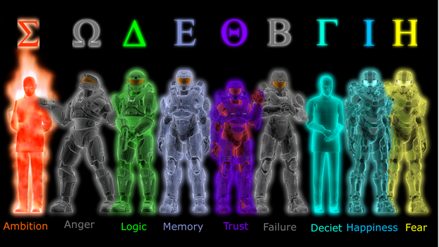

Recollection has each season with a name. Season 6 is Reconstruction. The mini-series between seasons 6 and 7 is Relocated. Season 7 is Recreation. Season 8 is Revelation.
This arc takes places some time after the events of at the end of The Blood Gulch Chronicles. While this arc could possibly have started with the mini-series Recovery One with a Freelancer named Washington (Wash for short), is takes things in a new direction for the Reds and Blues. This time they have to face an ex-Freelancer who is now called The Meta. He is bent on getting the AIs that were a part of Project Freelancer in order to get power. However, the Reds and Blues manage to stop him with and EMP (though they pronounce it like hemp, but without the "h"). Following this, they have to deal the aftermath of the Meta and the last surviving AI: Epsilon.
AIs That Appear
- Alpha (the real identity of Church) - the original AI
- Beta (the real identity of Tex) - the embodiment of a lost love (Allison Church) who was created as a by-product of the Alpha AI
- Omega (AKA O'Malley)- fragment AI representing rage
- Gamma (AKA Gary)- fragment AI represnting deceit
- Delta - fragment AI representing logic
- Theta - fragment AI representing trust
- Eta - fragment AI representing fear
- Iota - fragment AI representing happiness
- Sigma - fragment AI representing creativity and was the AI that made the Meta
- Epsilon - fragment AI representing memory and the next incarnation of Church after the Alpha AI is destroyed by the EMP